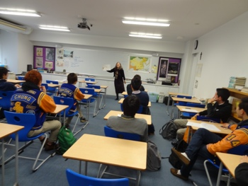

TOK
As its title of the suggests, this course involves an analysis of knowledge - it's nature, development, discovery, acquisition, manipulation and retention. This analysis will inevitably touch upon many disciplines such as history, philosophy, ethics, religion, psychology, language, logic, mathematics and science, but will not focus on any of these disciplines outside the context of knowledge. For example, rather than study the causes and results of a particular event in history in order to understand the event itself, we might ask such questions as, "How have such events influenced the course of history? Why is the study of such events important? Can we truly comprehend the nature of any event?" The TOK course thus challenges the students to question themselves and the world in which we live, and to question critically the basis of any dogma.
This class meets every other day and is a requirement for any student wishing to complete the full IB Diploma. While there is no final externally assessed examination in this subject, students will be required to submit a comprehensively researched essay to the IB for external assessment. There is also an oral presentation by students in the 12th Grade year that further contributes to the IB Diploma. In addition, students will be assessed internally through written assignments, projects and other activities which will make up the quarter and semester grades.
The Extended Essay (EE), a 4000-word research paper in any IB subject, is another core requirement of Full Diploma Candidates. This essay is externally assessed, but managed through the TOK classes. Students will begin writing the EE in the second semester of the 11th Grade year, and complete it in the first semester of the 12th Grade Year. Grades associated with progress at various stages of the EE writing process will be awarded as part of the TOK class grade.
Course Objectives
Students will be able to:
- Demonstrate an understanding of the strengths and limitations of various 'Ways of Knowing' and the methods used in the different 'Areas of Knowledge'
- Reason critically
- Make interdisciplinary connections
- Understand aspects of how knowledge works in the world
- Understand the strengths and limitations of individual and cultural perspectives and recognize bias
- Develop an appreciation for rigor and discipline required in formulating knowledge claims
- Appreciate the importance of intellectual honesty
- Express one's ideas clearly in both oral and written form
- Demonstrate an understanding of how knowledge works in the world
Resources and Materials
While no single textbook is relied upon exclusively, various texts are used in this course, including but not limited to:
van de Lagemaat, Richard. Theory of Knowledge for the IB Diploma. Cambridge. CUP, 2005.
Davies, Martin and Sievers, Kenneth. The Nature of Knowing. Victoria. IBID Press, 2006.
Dombrowski, Eileen, et al. Theory of Knowledge Course Companion. Oxford. OUP, 2013
In addition, film clips articles from numerous sources are utilized.
Assessment and Grading
The most important criteria for success in TOK are participation and keeping up with the readings. Students should actively engage in class discussion and should be willing to share their points of view with the class. For this reason, a significant portion of the grade in TOK comes from class participation.
In addition, students will be assessed on essay writing, shorter pieces of writing, periodic quizzes (which will determine the level of assimilation material), presentations and project work.
The most significant assessments will be the IB TOK Essay and the IB TOK Presentation which are completed in the 12th Grade. The assessment criteria for these are set by the IBO and are distributed to students before they begin these tasks.